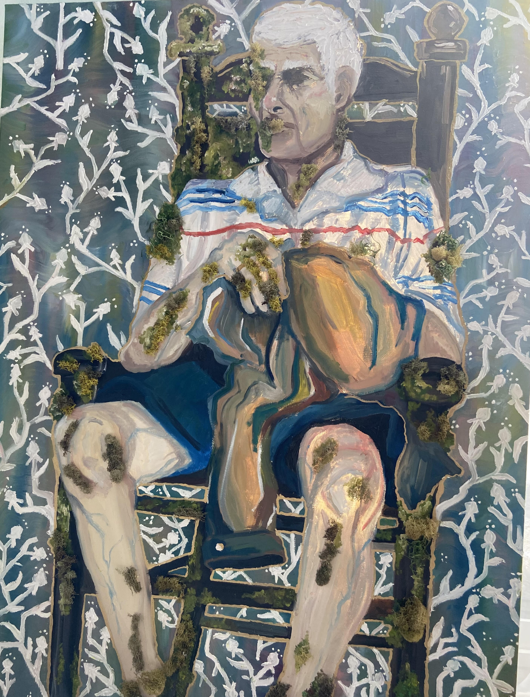

This artwork is inspired by my grandfather, being diagnosed with Alzheimer's. It was a turbulent time for my family, and seeing the effects first had was devastating, so I wanted to capture these felings in my work. I made the painting more in the form of memory and hazy, showing a more dream or fading image of the grandfather slowly diapering.
